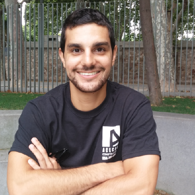

e---
layout: page
title: Sun Zhanhong, Dexter
---
<div class="home">
  <script async src="https://www.googletagmanager.com/gtag/js?id=UA-108085250-1"></script>
<script>
  window.dataLayer = window.dataLayer || [];
  function gtag(){dataLayer.push(arguments);}
  gtag('js', new Date());

  gtag('config', 'UA-108085250-1');
</script>

  

<br>
Hi welcome! My name is Sun Zhanhong, Dexter and I am a Ph.D. candidate in Mechanical Engineering at the National University of Singapore. At the same time, I am also a research engineer under Prof. CHIRIKJIAN, Gregory S.

<br><br>
My research interest lies in the field of Robotics, vision-based control, NLP, and human-robot interaction.
<a href="https://pesoto.github.io/research" target="_self">research</a>
<br><br>
 <i>NOTE:</i> This is a personal webpage and any views or information reflect solely the author and are not the views of NUS.
</div>
